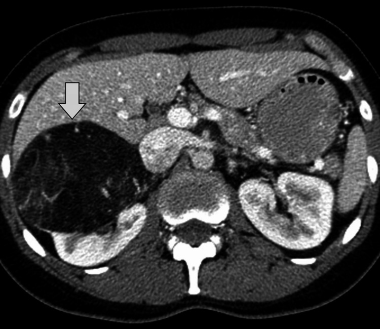

Ficha del catálogo
Angiomiolipoma renal
- Sistema
- Urinario
- Modalidad
- TC
- Región
- Riñón
- Dificultad
- Intermedio
El angiomiolipoma es el tumor renal benigno más frecuente y está compuesto por vasos anómalos de pared gruesa, músculo liso y tejido adiposo maduro. La mayoría son esporádicos, únicos y de predominio femenino, mientras que las formas múltiples y bilaterales se asocian a esclerosis tuberosa. Su relevancia clínica deriva del riesgo de hemorragia espontánea en lesiones de gran tamaño.
Técnica
La tomografía sin contraste con cortes finos permite identificar la grasa macroscópica mediante regiones de interés pequeñas colocadas en las zonas más hipodensas. La resonancia magnética con secuencias en fase y fase opuesta y con saturación grasa confirma el componente adiposo. El ultrasonido sirve como cribado por la marcada ecogenicidad de la lesión.
Qué observar
- Focos de atenuación negativa inferiores a menos 10 unidades Hounsfield
- Componente vascular con realce tras el contraste
- Tamaño máximo de la lesión y presencia de aneurismas intratumorales
- Signos de hemorragia aguda intratumoral o perirrenal
- Número y bilateralidad de las lesiones
- Estigmas asociados de esclerosis tuberosa en otros órganos
Hallazgos
Se identifica una masa renal bien delimitada con áreas de grasa macroscópica de baja atenuación entremezcladas con componentes de partes blandas y vasculares que realzan. En ultrasonido aparece marcadamente hiperecogénica, a menudo comparable a la grasa del seno renal. En resonancia el componente graso es hiperintenso en T1 y se anula con las secuencias de saturación grasa, con artefacto de desplazamiento químico en la interfase con el parénquima.
Perlas
La detección de grasa macroscópica en una masa renal, en ausencia de calcificaciones, es prácticamente diagnóstica de angiomiolipoma. La combinación de grasa y calcificaciones dentro de la misma lesión debe hacer pensar en carcinoma de células renales, ya que este puede englobar grasa del seno u osificar.
Diagnóstico diferencial
- Carcinoma de células renales
- Rara vez contiene grasa macroscópica y, cuando la contiene, suele asociar calcificaciones (su realce es más heterogéneo con necrosis).
- Angiomiolipoma pobre en grasa
- No muestra grasa detectable y resulta indistinguible del carcinoma por imagen, por lo que suele requerir biopsia.
- Liposarcoma retroperitoneal
- Desplaza el riñón en lugar de originarse en él y muestra el signo del pico renal negativo con vasos nutricios extrarrenales.
Simuladores
- Grasa del seno renal englobada por una masa
- Lipoma renal o perirrenal
- Carcinoma renal con degeneración lipídica
Por modalidad
- TC
- Es la técnica más directa para demostrar grasa macroscópica mediante medición de atenuación y para valorar la hemorragia aguda.
- US
- Muestra una lesión intensamente hiperecogénica que sugiere el diagnóstico, aunque no es específica y siempre requiere confirmación.
Protocolo
Tomografía renal con fase simple de cortes finos de 1 a 3 milímetros seguida de fase nefrográfica con contraste yodado. Se colocan regiones de interés pequeñas dentro de las áreas hipodensas evitando el promediado de volumen parcial. En resonancia se emplean secuencias potenciadas en T1 en fase y fase opuesta, T2 y secuencias con supresión grasa.
Clasificación
El manejo se orienta principalmente por el tamaño: Las lesiones menores de 4 centímetros suelen vigilarse, mientras que las mayores o las que contienen aneurismas superiores a 5 milímetros presentan mayor riesgo hemorrágico y se consideran candidatas a embolización o cirugía conservadora de nefronas.
Errores frecuentes
- Concluir angiomiolipoma ante una masa hiperecogénica en ultrasonido sin confirmar grasa por tomografía o resonancia
- Medir la atenuación con una región de interés demasiado amplia que promedia grasa y parénquima
- No advertir que la coexistencia de grasa y calcificaciones orienta a carcinoma renal

angiomiolipoma grasa macroscópica tumor renal benigno esclerosis tuberosa hiperecogénico hemorragia renal embolización